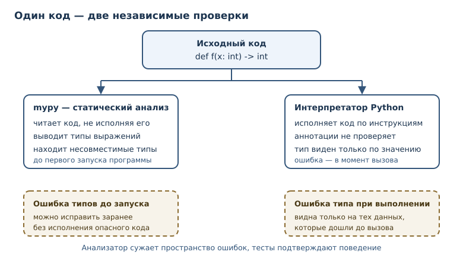
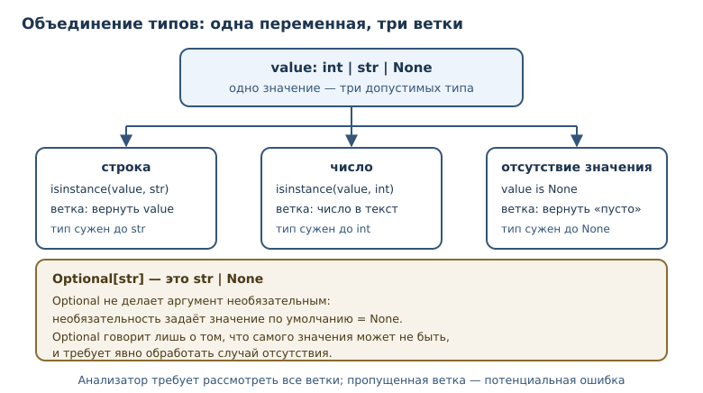

Аннотации типов и статическая проверка
Как описывать типы в коде, что проверяет mypy и почему аннотации не защищают программу во время выполнения.
В этой главе
К этому моменту вы умеете писать программы, в которых типы определяются значениями: одно и то же имя может хранить число, затем строку, затем список. Такая гибкость удобна в небольших сценариях и опасна в больших: читателю приходится угадывать, что функция ожидает на входе и что обещает вернуть, а ошибка обнаруживается только тогда, когда до неё дойдёт исполнение.
Аннотация типа — это запись ожидаемого типа рядом с именем или сигнатурой. Она не меняет поведение программы, но служит документацией для людей и входными данными для статических анализаторов. В этой главе вы научитесь описывать контракты функций и структур данных, поймёте, что именно проверяет mypy и где заканчиваются его гарантии.
Аннотации окупаются не сразу. В программе на пятьдесят строк они выглядят
канцелярией, зато в проекте на несколько тысяч строк экономят часы: вместо
чтения тела функции достаточно взглянуть на сигнатуру, а вместо отладки
AttributeError на проде — увидеть предупреждение до коммита. Плата за это —
дисциплина: аннотировать нужно последовательно, а результаты проверки
исправлять, а не подавлять.
31.1 Что вы сможете после этой главы
- аннотировать переменные, параметры и возвращаемые значения;
- записывать «одно из нескольких» через объединение типов и честно обрабатывать отсутствие значения;
- описывать контейнеры обобщёнными типами и связывать типы входа и выхода через TypeVar;
- понимать разницу между статической проверкой и типами во время выполнения;
- читать сообщения mypy и не превращать аннотации в формальность.
31.2 Аннотация: синтаксис и смысл
Аннотация — синтаксическая запись типа рядом с именем: x: int = 0,
def f(a: str) -> bool. Двоеточие после имени вводит тип переменной,
стрелка -> — тип результата функции. Синтаксис доступен и для атрибутов
класса, и для элементов контейнеров.
def greet(name: str, times: int = 1) -> str:
return ("Привет, " + name + "! ") * times
print(greet("Аня", 2))
print(greet.__annotations__)
Привет, Аня! Привет, Аня!
{'name': <class 'str'>, 'times': <class 'int'>, 'return': <class 'str'>}
Аннотации не исчезают: интерпретатор собирает их в словарь
__annotations__. Это обычные объекты Python, и их можно прочитать в
программе, например в библиотеке, которая строит документацию или
валидирует данные.
Важно различать два близких термина.
- Аннотация — синтаксическая запись:
count: int. - Аннотация типа (type hint) — указание ожидаемого типа, которое проверяют статические анализаторы, но не сам интерпретатор.
Разница проявляется при запуске: аннотация существует как объект, а проверки типа при вызове не происходит.
def double(value: int) -> int:
return value * 2
print(double(21))
print(double("21"))
42
2121
Второй вызов не вызвал ошибку: Python умножил строку на два. Аннотация
int — обещание, а не ограничение. Именно поэтому нужен отдельный
инструмент, который читает код, не исполняя его.
Аннотации и docstring
Строка документации описывает назначение функции словами, а аннотации фиксируют её контракт в машиночитаемом виде. Эти два инструмента не конкурируют: docstring отвечает на вопрос «зачем и при каких условиях», а аннотации — на вопрос «какие типы на входе и выходе».
def convert(amount: int, rate: float) -> float:
"""Переводит сумму по курсу.
amount — сумма в копейках, rate — множитель курса.
Возвращает сумму в рублях с дробной частью.
"""
return amount * rate / 100
Читатель видит и смысл, и типы. Редактор кода, получив аннотации, подсказывает аргументы и проверяет вызовы ещё до запуска. Если аннотации расходятся с docstring, доверять стоит аннотациям: их проверяет инструмент, а текст docstring — только человек на ревью. Поэтому контракт лучше держать в одном месте, а в docstring описывать то, что из типов не видно: единицы измерения, допустимые диапазоны, смысл исключений.
31.3 mypy: статическая проверка
mypy — статический анализатор типов для Python, проверяющий аннотации без запуска кода. Он разбирает программу, выводит типы выражений и сообщает о местах, где фактический тип не совпадает с обещанным. mypy не входит в стандартную библиотеку: это внешняя зависимость, которую устанавливают в виртуальное окружение проекта.
Пусть файл app.py содержит такой код:
def double(value: int) -> int:
return value * 2
print(double("21"))
Запуск анализатора даёт ошибку:
$ mypy app.py
app.py:5: error: Argument 1 to "double" has incompatible type "str"; expected "int" [arg-type]
Found 1 error in 1 file (checked 1 source file)
Сообщение читается слева направо: файл и строка, уровень, суть, код правила.
arg-type — необязательная метка, по ней удобно искать объяснение в
документации. Анализатор не исполнял программу: ошибка найдена до запуска,
как синтаксическая, но, в отличие от неё, код остаётся синтаксически
корректным и запускается. Имя правила зависит от механизма: arg-type —
неверный аргумент вызова, call-overload — не подошла ни одна перегрузка
(например, индекс списка оказался строкой), union-attr — обращение к
атрибуту, которого нет у одного из вариантов объединения.
Что mypy проверяет уверенно:
| Ситуация | Реакция mypy |
|---|---|
передали str туда, где обещан int |
ошибка arg-type |
вернули не тот тип, что в -> |
ошибка return-value |
| обратились к атрибуту, которого нет у типа | ошибка attr-defined |
| передали в метод контейнера аргумент не того типа | ошибка arg-type |
| проиндексировали контейнер неподходящим типом | ошибка call-overload |
значение может быть None, а код этого не учитывает |
ошибка union-attr |
Чего mypy не делает: не проверяет значения, не ловит деление на ноль, не
доказывает, что ветка if недостижима, и не гарантирует соответствие
аннотаций реальным данным, если они пришли извне. Статический анализ
сужает пространство ошибок, но не заменяет тесты (глава 32).

Строгий и мягкий режимы
У анализатора есть настройки строгости. В pyproject.toml проекта указывают
режим и исключения:
[tool.mypy]
python_version = "3.14"
strict = true
warn_unused_ignores = true
При strict = true mypy требует аннотаций у функций, запрещает неявный
Any и неразмеченные контейнеры. Начинать с полного strict в старом
проекте болезненно: сотни сообщений закрывают полезный сигнал. Разумнее
включать строгость постепенно.
Работающая стратегия внедрения выглядит так. Сначала аннотируют публичные функции и границы модулей — там, где контракт важен другим людям. Затем включают проверку в непрерывной интеграции, чтобы новые изменения не добавляли ошибок. Старые модули переводят по одному и фиксируют прогресс числом подавлений. На каждом шаге важно, чтобы отчёт оставался коротким: если mypy выдаёт двести сообщений, его перестают читать, и проверка превращается в формальность.
31.4 Объединение типов и Optional
Иногда значение может быть одного из нескольких типов. Объединение типов —
тип «одно из нескольких»: int | str (в старом синтаксисе
Union[int, str]). Проверяющая программа должна рассмотреть каждую ветку.
def stringify(value: int | float | str) -> str:
if isinstance(value, str):
return value
return f"число: {value}"
print(stringify("готово"))
print(stringify(3.5))
print(stringify(7))
готово
число: 3.5
число: 7
isinstance не только выбирает ветку исполнения, но и сужает тип для
анализатора: внутри if значение считается строкой. Этот приём называют
сужением типа.
Отдельный и самый частый случай — «значение или ничего». Optional —
объединение типа с None: str | None. Историческое имя Optional пришло
из модуля typing; смысл тот же, но новое написание короче.
from typing import Optional
def find_user(user_id: int) -> Optional[str]:
... # вернёт имя пользователя или None, если его нет
Почему это важно? dict.get возвращает не значение, а «значение или None».
Если забыть о второй возможности, программа упадёт на первом же отсутствующем
ключе.
prices = {"яблоко": 50}
price = prices.get("слива")
print(price + 10)
TypeError: unsupported operand type(s) for +: 'NoneType' and 'int'
Правильный код явно обрабатывает отсутствие значения:
prices = {"яблоко": 50, "груша": 80}
price = prices.get("слива")
if price is None:
print("нет в продаже")
else:
print(price + 10)
нет в продаже
Обратите внимание: Optional[str] — это не «необязательный аргумент». За
необязательность аргумента отвечает значение по умолчанию, а Optional
говорит лишь о том, что само значение может отсутствовать. Путаница между
этими двумя вещами — постоянный источник ошибок.

31.5 Обобщённые типы
Контейнер хранит элементы, и хочется описать не только «список», но и «список
чисел». Обобщённый тип — тип с параметрами: list[int],
dict[str, float], tuple[int, ...]. Параметры уточняют, что внутри.
from typing import TypeVar
T = TypeVar("T")
def first(items: list[T]) -> T:
return items[0]
numbers: list[int] = [10, 20, 30]
names: list[str] = ["Аня", "Борис"]
print(first(numbers))
print(first(names))
print(first.__annotations__)
10
Аня
{'items': list[~T], 'return': ~T}
TypeVar — переменная типа, связывающая типы входа и выхода обобщённой
функции. Запись list[T] -> T обещает: если на вход пришёл список чисел, на
выходе будет число; если список строк — строка. Без такой связи пришлось бы
писать object, теряя информацию.
Параметры типов доступны и для анализа, и для интроспекции:
from typing import get_args, get_origin
print(get_origin(dict[str, float]))
print(get_args(dict[str, float]))
print(get_args(tuple[int, ...]))
<class 'dict'>
(<class 'str'>, <class 'float'>)
(<class 'int'>, Ellipsis)
dict[str, float] — это объект-описание типа, а не сам словарь. Создать
значение из него нельзя: обобщённые типы существуют для проверки и
документирования, а не для конструирования.
Начиная с Python 3.12 появился более короткий синтаксис параметров типа:
def first[T](items: list[T]) -> T:
return items[0]
type Pair[T] = tuple[T, T]
Он читается лучше, но требует 3.12+. Книга минимально поддерживает 3.11,
поэтому в примерах выше используется TypeVar: этот вариант работает во всех
поддерживаемых версиях.
Обобщённые контейнеры на практике
Обобщённые типы описывают не только отдельное значение, но и форму данных. Функция, которая раскладывает числа по группам, возвращает словарь списков; аннотация фиксирует и тип ключей, и тип элементов.
def group_by_parity(numbers: list[int]) -> dict[str, list[int]]:
groups: dict[str, list[int]] = {"чётные": [], "нечётные": []}
for number in numbers:
key = "чётные" if number % 2 == 0 else "нечётные"
groups[key].append(number)
return groups
print(group_by_parity([1, 2, 3, 4]))
{'чётные': [2, 4], 'нечётные': [1, 3]}
Без параметров типа пришлось бы писать dict и list, теряя информацию о
том, что внутри. С ними читатель видит форму результата без запуска кода, а
анализатор проверяет, что append получает именно числа.
31.6 Типы во время выполнения
Фраза «типы во время выполнения» описывает ограниченность аннотаций: они не
проверяются при запуске. Интерпретатор не сверяет аргументы с аннотациями и не
останавливает вызов. Проверку можно сделать вручную — через isinstance, — но
это уже отдельный код, а не свойство аннотации.
def area(width: float, height: float) -> float:
if not isinstance(width, (int, float)) or not isinstance(height, (int, float)):
raise TypeError("ширина и высота должны быть числами")
return width * height
print(area(2, 3.5))
7.0
Такая проверка полезна на границе программы, где данные приходят из файла, сети или командной строки. Внутри программы, где типы уже известны из кода, ручные проверки чаще мешают: они дублируют то, что должен был поймать анализатор.
Отдельного разговора заслуживает тип Any. Он отключает проверку для
значения: с Any разрешено всё, и ошибка не будет найдена ни анализатором,
ни, возможно, тестами. Any неизбежен на границах, где данные ещё не
разобраны: JSON-ответ, аргументы командной строки, результат чтения файла.
Правило простое: Any допустим на входе границы, но сразу после проверки
значение должно получить конкретный тип. Если Any расползается по
программе, статическая проверка перестаёт что-либо гарантировать.
Есть и тонкость с самими аннотациями. Если аннотация записана строкой
("str") или включён режим отложенных аннотаций, в __annotations__ лежит
строка, а не тип. Чтобы получить настоящие объекты типов, используют
typing.get_type_hints, который разрешает имена в текущем пространстве имён.
from typing import get_type_hints
def parse(raw: "str", base: int = 10) -> int:
return int(raw, base)
print(parse.__annotations__)
print(get_type_hints(parse))
{'raw': 'str', 'base': <class 'int'>, 'return': <class 'int'>}
{'raw': <class 'str'>, 'base': <class 'int'>, 'return': <class 'int'>}
Практический вывод: не полагайтесь на __annotations__ как на готовые типы.
Для библиотек, которые анализируют сигнатуры, есть get_type_hints и
inspect.signature — они корректно обрабатывают строковые аннотации.
31.7 Типичные ошибки
- Считать аннотацию проверкой.
def f(x: int)не мешает передать строку. Без запуска mypy аннотации остаются документацией. - Аннотировать только часть кода. Если функция объявлена без типов, mypy выводит их сам и может ошибиться молча. Строгий режим начинается с обязательных аннотаций на публичных границах.
- Путать
Optionalс аргументом по умолчанию.x: int | None = Noneозначает «значение может отсутствовать»; необязательность задаёт= None, а не сам тип. - Игнорировать
Noneв цепочках вызовов.prices.get(...) + 1падает, если ключа нет. Анализатор предупреждает об этом заранее — не подавляйте предупреждение. - Заглушать анализатор.
# type: ignoreбез причины скрывает реальную ошибку. Если подавление нужно, указывайте код правила и объясняйте причину комментарием. - Обещать больше, чем даёте.
-> intпри фактическом возвратеNoneломает доверие к типам; лучше честныйint | None, чем красивая, но ложная сигнатура. - Менять аннотацию вместо кода. Когда mypy сообщает о несовместимости,
соблазн велик — расширить тип до
objectили поставитьAny. Это «лечение» отчёта, а не причины: ошибка остаётся, просто становится невидимой.
31.8 Упражнения
1. Аннотации простой функции
Напишите функцию mean(a: float, b: float) -> float, возвращающую среднее
двух чисел. Добавьте аннотации, вызовите функцию для (3, 4) и выведите
результат. Затем выведите mean.__annotations__ и объясните, что в нём
лежит.
2. Прогнозирование вывода
Что выведет программа и почему?
def repeat(text: str, times: int) -> str:
return text * times
print(repeat("да", 2))
print(repeat("да", "2"))
Запишите ответ, проверьте запуском и объясните, какую ошибку поймал бы mypy.
3. Исправление Optional
Код падает на отсутствующем ключе:
config = {"debug": True}
level = config.get("level")
print(level.upper())
Перепишите его так, чтобы при отсутствии значения выводилось "INFO", а при
наличии — значение в верхнем регистре. Аннотируйте переменную как
str | None и объясните, где именно сужается тип.
4. Объединение типов
Напишите функцию describe(value: int | str | None) -> str, которая
возвращает: для None — "пусто", для строки — "строка: <значение>", для
числа — "число: <значение>". Проверьте все три ветки.
5. Обобщённый минимум
Напишите обобщённую функцию smallest(items: list[T]) -> T, которая
возвращает первый элемент списка после сортировки копии. Используйте
TypeVar. Проверьте на list[int] и list[str].
6. mypy по описанию
Не запуская mypy, перечислите все ошибки, которые он найдёт в коде:
def total(prices: list[float]) -> float:
return sum(prices)
def label(count: int) -> str:
return count
print(total(["10", "20"]))
print(label("три"))
Затем сверьтесь с решением и объясните каждую ошибку.
7. Сужение типа
Напишите функцию length(value: list[int] | str | None) -> int, которая
возвращает длину значения, а для None — 0. Внутри используйте isinstance
и ранний возврат. Покажите, что все три случая работают.
8. Проверка на границе
Функция принимает age: int, но данные пришли из JSON, где возраст может быть
строкой. Напишите функцию parse_age(raw: object) -> int, которая проверяет
тип через isinstance, преобразует строку в число и поднимает TypeError с
понятным сообщением для остальных случаев. Проверьте три варианта.
9. Аннотации и реальность
Объясните текстом (5–7 предложений), почему этот код не падает при запуске, но должен вызвать ошибку mypy:
def tag(value: int) -> str:
return f"#{value}"
print(tag("десять"))
10. Мини-проект: контракт функции
Спроектируйте сигнатуру функции apply_discount(price: float, percent: float, *, minimum: float = 0.0) -> float. Опишите словами контракт:
допустимые значения, что происходит при отрицательной цене или проценте,
что возвращается при скидке больше 100 %. Реализуйте функцию с проверками и
аннотациями, проверьте граничные случаи.
31.9 Проверка понимания
- Чем аннотация отличается от аннотации типа в формулировке этой главы?
- Что именно проверяет mypy и почему он не заменяет запуск программы?
- Почему
str | Noneтребует явной обработкиNone, аstr— нет? - Зачем нужен
TypeVar, если можно написатьlist[object] -> object? - Где
__annotations__содержит строки, а где типы? Как получить типы надёжно? - В чём разница между «аннотация не проверяется» и «проверка невозможна»?
- Какую ошибку допускает программист, считающий
Optionalсинонимом аргумента по умолчанию?
31.10 Что дальше
Аннотации и mypy сужают пространство ошибок до запуска, но не подтверждают, что программа делает правильные вещи. Следующая глава посвящена проверкам во время выполнения — тестам: они фиксируют ожидаемое поведение на конкретных данных и защищают от регрессий. Вместе получаются две линии защиты: анализатор ловит несоответствия типов, тесты — неверное поведение.
Полезно помнить, откуда пришли эти инструменты. Сигнатуры функций, значения по умолчанию и возврат результата разобраны в главе 7; протоколы, на которых держится структурная типизация, — в главе 29. Тесты, которые проверяют поведение функций, ждут в главе 32, а о том, как интерпретатор исполняет аннотированный код на уровне байткода, — в главе 42.